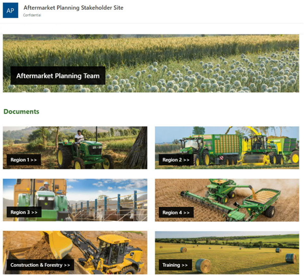

Aftermarket Planning Team Stakeholder SharePoint Site
Skills: Content Management, Graphic Design, Usability Testing, Audience Analysis, Stakeholder Analysis, Implementation
Tools: SharePoint, Microsoft Teams
Problem:
The Aftermarket Planning Team owned and produced many research study documents and data visualizations that the team’s stakeholders needed to easily access. The files were stored on a SharePoint site that lacked organization. As the team conducted more research and created more documents, the lack of organization made it harder for stakeholders to find the information they desired. Thus, I was tasked with transforming the SharePoint site into a central resource that solved this problem.
Step 1: Interview stakeholders and audience members.
The site had two audiences: the six members of the Aftermarket Planning Team who needed to update the site (who were simultaneously the project’s stakeholders) and the team’s stakeholders who wanted to access data from the site. I started the project by conducting interviews with the entire Aftermarket Planning Team plus nine stakeholders who were upper-level managers of the Customer and Product Support teams. Everyone’s overarching goal for the site was for it to be easy to use and maintain. These goals were summarized in a company-confidential audience analysis report.
Step 2: Create mock sketches of content management strategies.
Next, low-fidelity mockups of the SharePoint site were created that showed the site's flow. I used these mockups as a proposal to my manager for how to organize the site.
Step 3: Determine what content to include.
I interviewed each member of the Aftermarket Planning Team to make a list of what content they wanted on the site. They prioritized the content based on how often stakeholders requested the data, placing the most often requested research and data documents at the top of the pages. When I interviewed each team member, I also gathered their feedback on the low-fidelity sketches.
Step 4: Implement the site.
Based upon the feedback from the team on the low-fidelity mockups and the list of documents needed for the site, I redesigned the SharePoint site and organized the team’s research content. Throughout the process, team members provided continuous feedback and input because they would need to update it after the transformation was completed.
Step 5: Complete usability tests.
Virtual usability tests were conducted with ten stakeholders to understand if they could navigate and find content based on the site’s organization. The test results showed that users could find content on the site.
Step 6: Improve the site based on test results.
While the usability tests were extremely successful, users had small feedback on how to further improve the site, and those suggestions were implemented.
Step 7: Provide a user’s manual.
Knowing that after the project’s completion the Aftermarket Planning Team would continue adding new documents and managing the site’s backend features to maintain the site’s usefulness for stakeholders, a user manual was written for the site’s backend. The document was produced to help team members continue to feel comfortable managing the site after my internship’s completion.
Results:
This project resulted in a central, user-friendly database for the team’s research. The team continues to use and maintain the site to provide data to their stakeholders. As the team’s data exponentially grew, the site’s infrastructure proved effective as a tool that continued to make finding team data simple for the team’s stakeholders and straightforward for the team to upload new research documents.